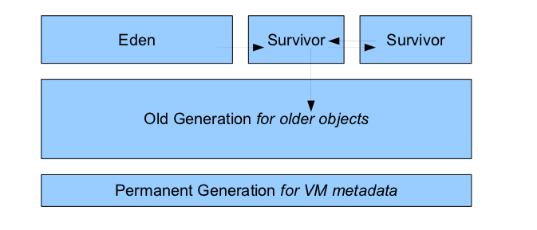
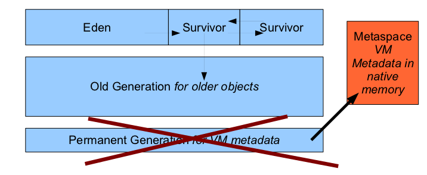
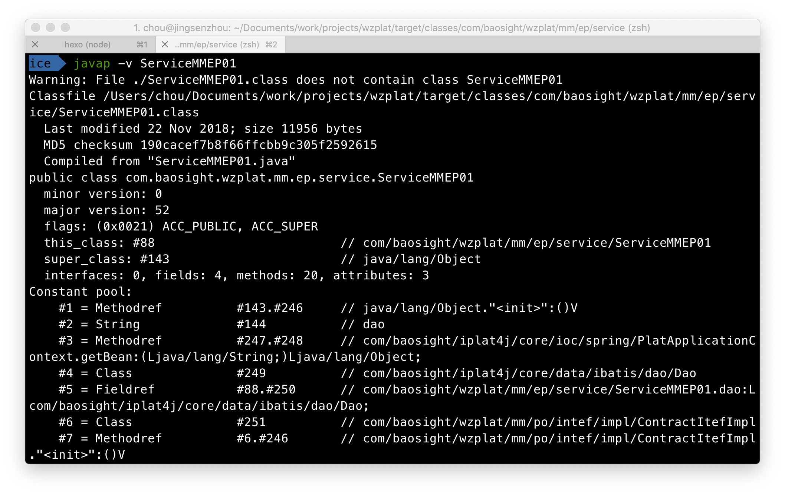
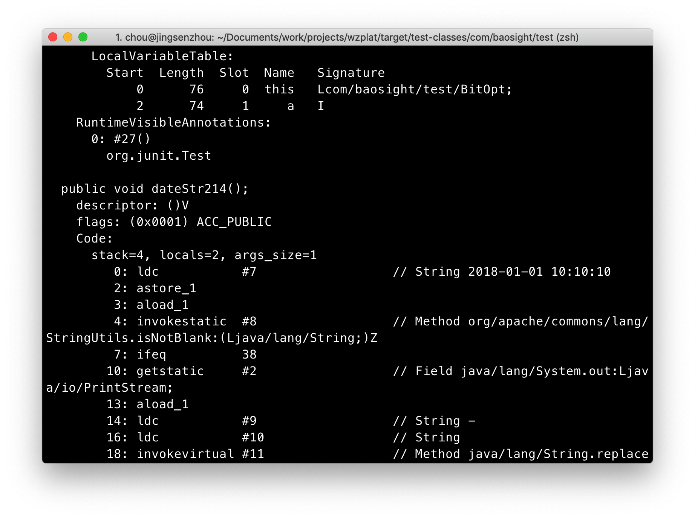
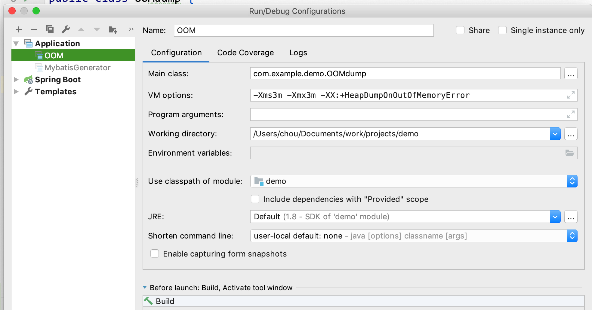
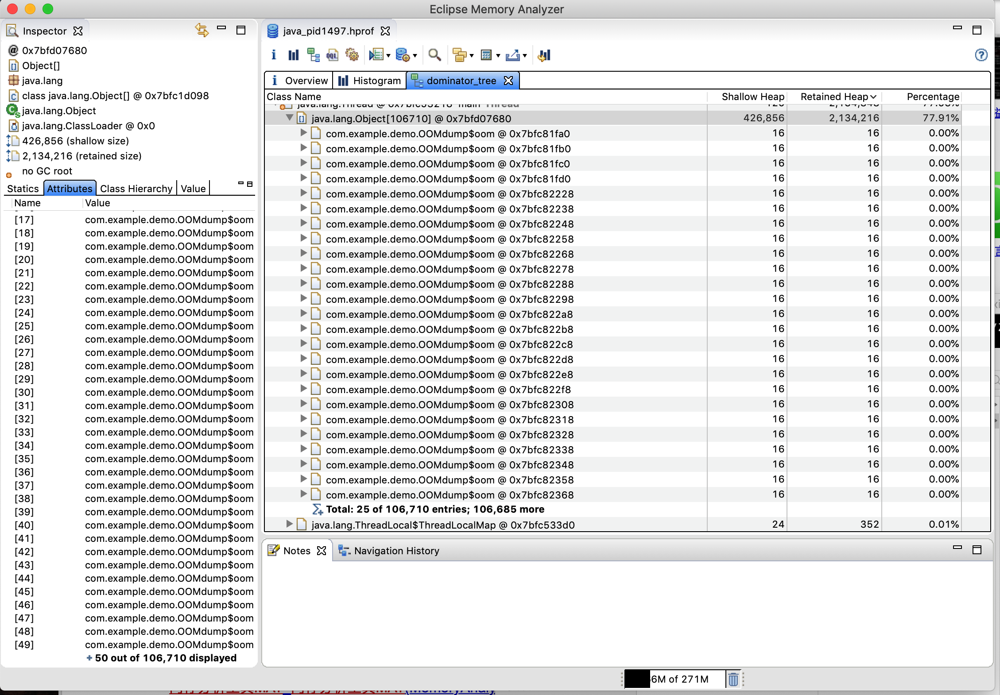

Java Virtual Machine知识及实践
JVM结构
1.类文件格式(class file format)
用于在 JVM 中执行的编译后的代码,也就是.class文件,.class文件是跨语言跨平台的基础
类文件布局如下表:
| byte offset | size | type or value | description |
|---|---|---|---|
| 0 | 4 bytes | u1 = 0xCA hex |
magic number (CAFEBABE) used to identify file as conforming to the class file format |
| 1 | u1 = 0xFE hex | ||
| 2 | u1 = 0xBA hex | ||
| 3 | u1 = 0xBE hex | ||
| 4 | 2 bytes | u2 | minor version number of the class file format being used |
| 5 | |||
| 6 | 2 bytes | u2 | major version number of the class file format being used. Java SE 12 = 56 (0x38 hex), |
| 7 | |||
| 8 | 2 bytes | u2 | constant pool count, number of entries in the following constant pool table. This count is at least one greater than the actual number of entries; see following discussion. |
| 9 | |||
| 10 | cpsize (variable) | table | constant pool table, an array of variable-sized constant pool entries, containing items such as literal numbers, strings, and references to classes or methods. Indexed starting at 1, containing (constant pool count - 1) number of entries in total (see note). |
| ... | |||
| ... | |||
| ... | |||
| 10+cpsize | 2 bytes | u2 | access flags, a bitmask |
| 11+cpsize | |||
| 12+cpsize | 2 bytes | u2 | identifies this class, index into the constant pool to a "Class"-type entry |
| 13+cpsize | |||
| 14+cpsize | 2 bytes | u2 | identifies super class, index into the constant pool to a "Class"-type entry |
| 15+cpsize | |||
| 16+cpsize | 2 bytes | u2 | interface count, number of entries in the following interface table |
| 17+cpsize | |||
| 18+cpsize | isize (variable) | table | interface table, an array of variable-sized interfaces |
| ... | |||
| ... | |||
| ... | |||
| 18+cpsize+isize | 2 bytes | u2 | field count, number of entries in the following field table |
| 19+cpsize+isize | |||
| 20+cpsize+isize | fsize (variable) | table | field table, variable length array of fields |
| ... | |||
| ... | |||
| ... | |||
| 20+cpsize+isize+fsize | 2 bytes | u2 | method count, number of entries in the following method table |
| 21+cpsize+isize+fsize | |||
| 22+cpsize+isize+fsize | msize (variable) | table | method table, variable length array of methods |
| ... | |||
| ... | |||
| ... | |||
| 22+cpsize+isize+fsize+msize | 2 bytes | u2 | attribute count, number of entries in the following attribute table |
| 23+cpsize+isize+fsize+msize | |||
| 24+cpsize+isize+fsize+msize | asize (variable) | table | attribute table, variable length array of attributes |
| ... | |||
| ... | |||
| ... |
2.数据类型(Data Types)
JVM 操作两种数据类型: 原始数据类型(primitive)、引用数据类型(reference types)
3.原始数据类型和值
JVM 支持的原始数据类型有:
- numeric
- boolean
- returnAddress
numeric类型 包括 整数类型 及 浮点类型
整数类型有:
- byte 8bit default value is o
- short 16bit default value is o
- int 32bit default value is o
- long 64bit default value is o
- char 16bit default value is the null
浮点类型有:
- float default value is positive zero
- double default value is positive zero
4.引用数据类型和值
引用数据类型:类、数组、接口。
它们的值分别是对动态创建的类实例，数组，实现接口的类实例或数组的引用
引用类型默认值为 null
5.JVM运行时数据区(Run-Time Data Area)
JVM定义了程序运行期间需要使用的多个运行时数据区域.
其中一些生命周期和JVM相同.另外一些生命周期和线程相同.
和JVM生命周期相同的区域为共享空间,和线程生命周期相同的区域为线程私有空间.
5.1程序计数器(PC Register)
JVM支持多线程同时执行.
每个JVM线程都有其自己的PC(program counter)寄存器.
在任何时候,JVM线程都在执行单个方法的代码,也就是说该线程的当前方法.
如果不是本地方法(Native Method),pc寄存器包含了当前正在执行的虚拟机指令地址.如果是本地方法的话,pc寄存器值为 undefined
此区域不存在OOM.
5.2虚拟机栈(Java Virtual Machine Stacks)
每个JVM线程都有一个私有的虚拟机栈,和线程一起创建.
虚拟机栈存储栈帧.
JVM栈类似于C语言的栈,它储存 本地变量, 局部结果, 在方法调用及返回中扮演着重要的角色.
一个方法从调用到结束调用对应着栈帧出栈和入栈过程.
虚拟机栈空间不必是连续的.
虚拟机栈空间可以是固定大小,也可按照需要动态扩展和压缩.
如果线程需要的虚拟机栈超过允许值,JVM将抛出 StackOverflowError ,如示例.
JVM在尝试进行扩展时内存不足 JVM 将抛出 OutOfMemoryError
5.3堆(Heap)
内存布局:
before version 8.0

after version 8.0

堆空间是线程共享的.
这里主要存放类实例以及数组.
堆空间在JVM启动时创建.
堆储存的对象被自动存储管理系统(GC)回收.
堆空间不必是连续的.
堆空间可以是固定大小,也可按照需要动态扩展和压缩.
当GC无法释放所需要的空间时 JVM 将抛出 OutOfMemoryError ,如示例
5.4方法区(Method Area)
方法区空间是线程共享的.
方法区储存类型信息,例如:运行时常量池/字段/方法/方法和构造函数代码,包括类的实例初始化以及接口初始化中使用的特殊方法
方法区在JVM启动时创建.
方法区是堆的逻辑部分,可以选择实现或不实现垃圾收集及压缩.
堆空间不必是连续的.
堆空间可以是固定大小,也可按照需要动态扩展和压缩.
当方法区无法满足请求分配量时 JVM 将抛出 OutOfMemoryError ,如示例
5.5运行时常量池(Run-Time Constant Pool)
用于存放编译期生成的各种字面量和符号引用，但并非只有编译期才产生，它是动态的，也就是说在运行期间也可以将新的常量放进去，比如 String 类的 intern()方法。运行时常量池是在 方法区(Method Area) 中分配的。

上图中使用 javap 命令对 .class 文件进行反编译，其中15行的Constant pool后便是运行时常量池内容
5.6本地方法栈(Native Method Stacks)
支持本地方法(使用非java语言的方法)
6.帧(Frames)
frame用来储存数据及局部结果，也被用来执行动态链接，返回方法的返回值，以及异常处理。
每当方法调用时创建一个帧，当调用结束时，帧被销毁(无论调用成功是否)。
帧创建在虚拟机栈中。
每个栈拥有自己的
- 本地变量数组 array of local variables
- 操作数栈 operand stacks
- 类的当前方法的运行时常量池引用
帧中本地变量数组以及操作数帧的大小在编译期已经确定。
线程创建的帧为该线程的本地帧，其他线程不可引用
6.1局部变量(Local Variables)
每个帧包含一个称为局部变量的变量数组。局部变量数组长度在编译期已经确定。
一个局部变量的值类型可以是:
- boolean
- byte
- char
- short
- int
- float
- reference
- returnAddress
一对局部变量的值类型可以是: - long
- double
局部变量用索引维护变量数组。

上图中使用 javap 命令反编译 .class，图中第一行显示即为局部变量，即当前帧的局部变量
局部变量表索引从1开始
6.2操作数栈(Operand Stacks)
每个帧拥有一个后进先出(LIFO)栈，也就是操作数栈。
操作数栈最大深度在编译期已经确定。
Java虚拟机提供指令以将局部变量或字段中的常量或值加载到 操作数栈 上，另提供拿取 操作数(operand) 以及操作 操作数(operand) 并将其放回 操作数栈 的Java虚拟机指令
比如 iadd 指令(两个整数相加)。bipush 指令将int值压入操作数栈，使用 iadd 指令将两个值相加并将结果压入栈顶，弹出两个整形值，使用 ireturn 返回栈顶数据。
代码及反编译结果如下:
1 | public int testInstruction(){ |
1 | Code: |
istore_<n>指令-将int存储到局部变量表中
iload_<n>指令-从局部变量表中取出int
其中 n 必须是当前帧本地变量表中的索引，且索引处的本地变量必须为 int
动态链接(Dynamic Linking)
每个栈帧都包含一个执行运行时常量池中该栈帧所属方法的引用，持有这个引用是为了支持方法调用过程中的动态连接(Dynamic Linking)
Class 文件中存放了大量的符号引用，字节码中的方法调用指令就是以常量池中指向方法的符号引用作为参数。这些符号引用一部分会在类加载阶段或第一次使用时转化为直接引用，这种转化称为静态解析。另一部分将在每一次运行期间转化为直接引用，这部分称为动态连接。
关于符号引用以及直接引用，请参考这里
正常的方法调用过程
如果调用期间没有发生要抛出的异常（包括JVM直接抛出的异常和显式throw）的话，方法的调用正常结束。如果调用正常结束，通过调用对应类型的返回指令将值返回给调用者，比如：ireturn 返回int、areturn 返回引用类型。
中断的方法调用过程
如果JVM指令导致JVM抛出异常并且异常在方法体内未被处理，方法调用立刻结束。
7.特殊方法(Special Methods)
OOM及DUMP内存快照分析实践
Heap OOM
- 编写测试类
1 | //-Xms3m -Xmx3m -XX:+HeapDumpOnOutOfMemoryError |
- 设置运行参数

按照上图添加 Run/Debug Configurations,注意 VM options,设置 Heap 大小且不可扩展且DUMP 内存快照以便事后分析
运行上面代码将会抛出OOM异常如下
1 | java.lang.OutOfMemoryError: Java heap space // OOM异常原因: 堆空间 |
使用内存分析工具MAT查看java_pid1497.hprof,MAT下载地址

从图中我们可以看到内部类oom占比77.91%,共106710个实体
下载过软件之后,安装出错,直接打开包,打开里边的Memory Analyzer使用即可
方法区 OOM
- 编写测试类
1 | //8.0版本前 |
- 运行结果
1 | Exception in thread "main" java.lang.OutOfMemoryError: Metaspace // 若在8.0之前,此处应该是 PermGen space |
虚拟机栈(JVM Stacks)StackOverFlowError
- 编写测试类
1 | //-Xss160k,通过减小虚拟机栈大小,创建大量栈帧撑爆虚拟机栈 |
- 设置运行参数为 -Xss160k(最小)
运行测试将抛出SOF异常如下:
1 | length:772 |
如果不设置VM options,栈深度为12455,也就是当前环境下虚拟机默认最大栈深度为12455
本文链接 http://blog.elegantme.cn/Java-Virtual-Machine知识及实践/ 转载请标明出处